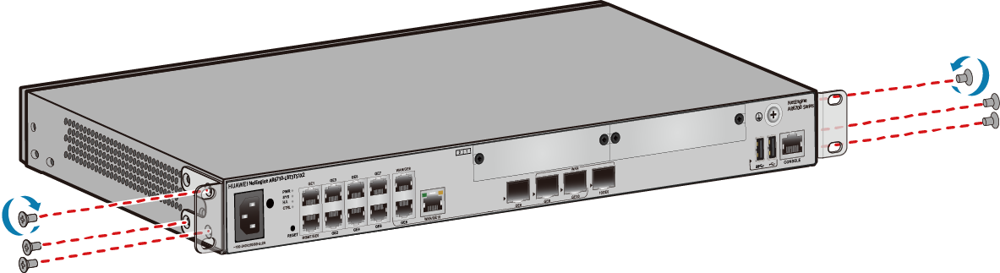
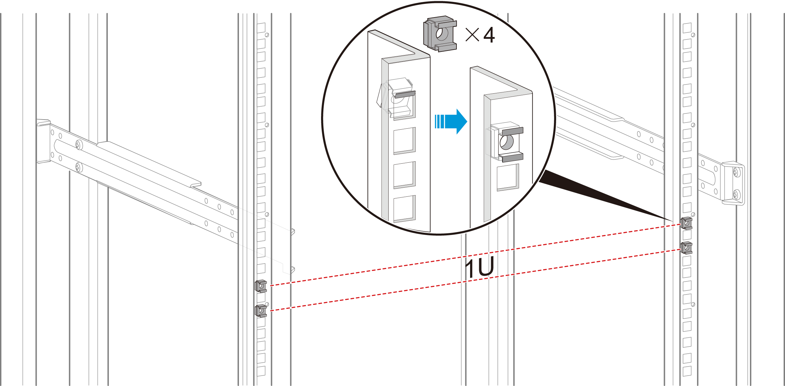
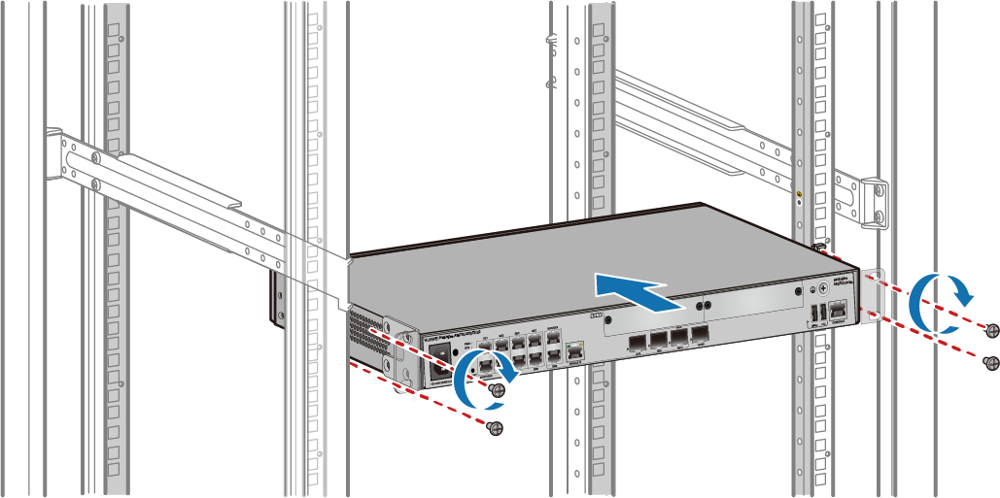

Installing a Router in a Cabinet Using Front Mounting Brackets
Context
Table 1 lists the products to which the installation mode is applicable.
Series |
Model |
|---|---|
AR5700 |
AR5710-S8P2X, AR5710-S8T1XWE, AR5710-S8T2S, AR5710-S8T2XE, AR5710-S8T2X, AR5710-S8T2X-LTE4EA, AR5710-S8T2XE-LTE4EA-T, AR5710-S10T1X2, AR5710-S8P2XE-NRGL, AR5710-S8T1XWE-NRGL, AR5710-S8T2XE-NRGL, AR5710-S8P1XDSE-2LTE4EA, AR5710-S8TWDSE-LTE4EA, AR5710-H2T4N2X-NRGL, AR5710-H2T4PN2X-NRGL, AR5710-H4T4N2X-LTE4EA, AR5710-H4T4N2X, AR5710-H8T2TS1, AR5710-H8T2TS1-T |
AR6700 |
AR6710-L8T3TS1X2, AR6710-L8T3TS1X2-T |

- The router can be installed into a 19-inch standard cabinet/rack. A separately purchased non-standard cabinet/rack must have sufficient space for device installation.
- You are advised not to install a Wi-Fi-capable router into a cabinet/rack.
- Leave at least 50 mm of clearance around the router for heat dissipation.
- If multiple routers are installed in a cabinet, it is recommended that at least 1 U of space (1 U = 44.45 mm) be kept between each two routers. These routers must have the same airflow direction; otherwise, heat dissipation is affected by hot air circulation.
Tools and Accessories
- Phillips screwdriver
- Flat-head screwdriver
- Floating nuts (four, separately purchased)
- Two mounting brackets
- M4 screws (used to attach mounting brackets on both sides of the router. The number of mounting brackets depends on the router model.)
- M6 screws (four, separately purchased)
Mounting brackets (21240383), M4 screws, and M6 screws for the AR5710-H8T2TS1 and AR5710-H8T2TS1-T are not included in the router's installation accessory package and need to be purchased separately. Figure 1 shows the distances between installation holes of a mounting bracket, in mm.
The mounting brackets (21245263), M4 screws, and M6 screws for the following devices are not included in the installation accessory package and need to be purchased separately: AR5710-S8P2X, AR5710-S8T1XWE, AR5710-S8T2S, AR5710-S8T2XE, AR5710-S8T2X, AR5710-S8T2X-LTE4EA, AR5710-S8T2XE-LTE4EA-T, AR5710-S8P2XE-NRGL, AR5710-S8T1XWE-NRGL, AR5710-S8T2XE-NRGL, AR5710-S8P1XDSE-2LTE4EA, AR5710-S8TWDSE-LTE4EA, AR5710-H2T4N2X-NRGL, AR5710-H2T4PN2X-NRGL, AR5710-H4T4N2X-LTE4EA, AR5710-H4T4N2X. Figure 2 shows the distances between installation holes of a mounting bracket.
Mounting brackets and M4 screws for the AR5710-S10T1X2 are included in the router's installation accessory package.
Procedure
- Use a Phillips screwdriver and M4 screws to attach the mounting brackets to both sides of the router.
When installing mounting brackets on both sides of the front panel, install the one with the ground point on the side with the R mark.

- Install two floating nuts on each of the front mounting rails. Leave a mounting hole between the two floating nuts on the same mounting rail.
- The length of three adjacent mounting holes may not be 1 U. Observe the scale ticks on the mounting rails when installing floating nuts.
- You can use a flat-head screwdriver to install floating nuts.

- Move the router into the cabinet. Support the bottom of the router and use a Phillips screwdriver to tighten the M6 screws on the mounting brackets. Tighten the lower M6 screws first, and then the upper M6 screws.
